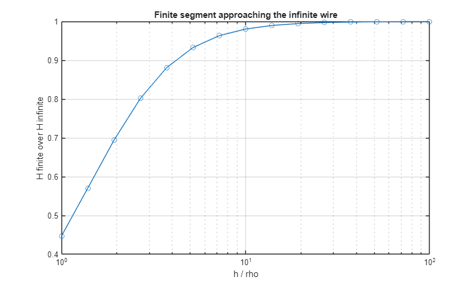
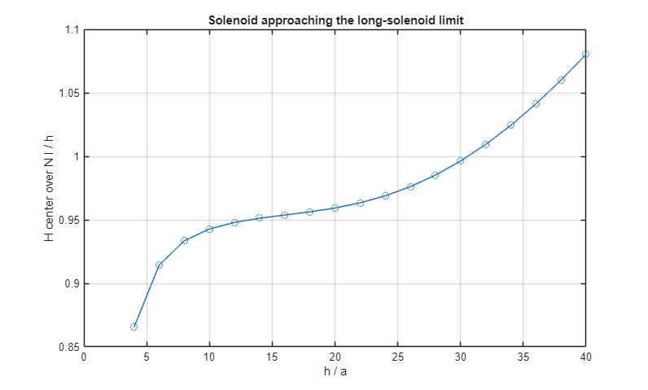
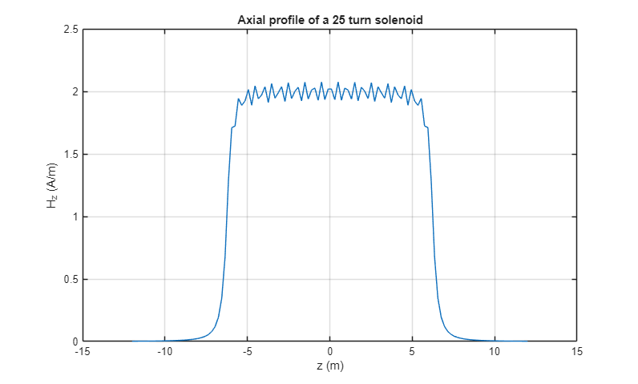

EECE 306 Lab 9 notebook. Current Sources and the Biot-Savart Law
Team 8. Thalea Collymore, Kroix Jones, Xavier Moore
Run publish('Lab09_notebook.m') from the toolbox root, then print the HTML to PDF.
Contents
Setup
clear; close all;
How long em.field.H took
minutes_for_H = 25; fprintf('Approximate time spent writing em.field.H: %.0f minutes\n', ... minutes_for_H); % Once lineCurrent was working, em.field.H did not require a major rewrite % of the Lab 3 field engine. The displacement vector and inverse-cube % distance calculation worked the same way as they did for the electric % field. The main change was replacing the charge numerator with the cross % product between Idl and the displacement vector. We also updated % em.quad.line so it could return the curve tangent and node weights needed % by lineCurrent. A clearer note in our earlier code about where the % quadrature weight was applied would have made this part faster.
Approximate time spent writing em.field.H: 25 minutes
Circular loop against the closed form
a = 1; I = 1; ring = @(t)[a*cos(t) a*sin(t) zeros(size(t))]; sr = em.src.lineCurrent(I, ring, [0 2*pi], 400); z = linspace(0, 2, 10)'; Hnum = em.field.H(sr, [zeros(10,2) z]); Href = I*a^2 ./ (2*(a^2 + z.^2).^1.5); disp(' z (m) relative error') disp([z abs(Hnum(:,3) - Href)./Href]) Hc = em.field.H(sr, [0 0 0]); fprintf('center H_z = %.6f I over 2a = %.6f\n', ... Hc(3), I/(2*a)); fprintf(['transverse component at center = %.3e ' ... '(consistent with zero)\n'], hypot(Hc(1), Hc(2)));
z (m) relative error
0 0.0000
0.2222 0.0000
0.4444 0.0000
0.6667 0.0000
0.8889 0.0000
1.1111 0.0000
1.3333 0.0000
1.5556 0.0000
1.7778 0.0000
2.0000 0.0000
center H_z = 0.500000 I over 2a = 0.500000
transverse component at center = 0.000e+00 (consistent with zero)
Finite segment against the infinite wire
This repeats the finite-line limit study from Lab 4 using magnetic field instead of electric field.
rho = 1; hor = logspace(0, 2, 15)'; ratio = zeros(size(hor)); for k = 1:numel(hor) h = hor(k) * rho; seg = @(t)[zeros(size(t)) zeros(size(t)) t]; ss = em.src.lineCurrent(I, seg, [-h/2 h/2], 800); Hs = em.field.H(ss, [rho 0 0]); ratio(k) = abs(Hs(2)) / (I/(2*pi*rho)); end figure; semilogx(hor, ratio, 'o-'); grid on xlabel('h / rho') ylabel('H finite over H infinite') title('Finite segment approaching the infinite wire') iWire = find(ratio > 0.99, 1); fprintf('ratio first exceeds 0.99 at h/rho about %.1f\n', ... hor(iWire)); % In our Lab 4 notebook, the finite line-charge study first crossed 0.99 % at L/d about 19.3. The magnetic result should be close because both % element fields have the same inverse-square dependence on distance. The % distant parts of the segment therefore stop changing the result at about % the same aspect ratio. lab4Threshold = 19.3; fprintf('Lab 4 line-charge threshold was L/d about %.1f\n', ... lab4Threshold);
ratio first exceeds 0.99 at h/rho about 19.3 Lab 4 line-charge threshold was L/d about 19.3

Solenoid aspect-ratio study
The height is increased while the radius and number of turns stay fixed. We compare the center field with the long-solenoid result N*I/h.
aS = 0.4; Nturns = 25; hOverA = linspace(4, 40, 19)'; solRatio = zeros(size(hOverA)); for m = 1:numel(hOverA) hTrial = hOverA(m) * aS; zk = linspace(-hTrial/2, hTrial/2, Nturns); srcs = cell(1, Nturns); for k = 1:Nturns zc = zk(k); loop = @(t)[aS*cos(t) ... aS*sin(t) ... zc*ones(size(t))]; srcs{k} = em.src.lineCurrent( ... I, loop, [0 2*pi], 200); end solTrial = em.src.merge(srcs{:}); H0 = em.field.H(solTrial, [0 0 0]); solRatio(m) = H0(3) / (Nturns*I/hTrial); end figure; plot(hOverA, solRatio, 'o-'); grid on xlabel('h / a') ylabel('H center over N I / h') title('Solenoid approaching the long-solenoid limit') iSol = find(solRatio >= 0.99, 1); if isempty(iSol) fprintf(['The center field did not reach 0.99 of N I/h ' ... 'in the tested range.\n']); hS = hOverA(end) * aS; else fprintf(['center field first reaches 0.99 of N I/h ' ... 'at h/a about %.1f\n'], hOverA(iSol)); hS = hOverA(iSol) * aS; end
center field first reaches 0.99 of N I/h at h/a about 30.0

Solenoid axial profile
Use a long solenoid from the aspect-ratio study and look at the field from below one end to above the other.
zk = linspace(-hS/2, hS/2, Nturns); srcs = cell(1, Nturns); for k = 1:Nturns zc = zk(k); loop = @(t)[aS*cos(t) ... aS*sin(t) ... zc*ones(size(t))]; srcs{k} = em.src.lineCurrent( ... I, loop, [0 2*pi], 200); end sol = em.src.merge(srcs{:}); zax = linspace(-hS, hS, 120)'; Hax = em.field.H(sol, [zeros(size(zax)) ... zeros(size(zax)) ... zax]); figure; plot(zax, Hax(:,3), '-'); grid on xlabel('z (m)') ylabel('H_z (A/m)') title('Axial profile of a 25 turn solenoid') Hcen = em.field.H(sol, [0 0 0]); Hmouth = em.field.H(sol, [0 0 hS/2]); fprintf('center H_z = %.4f N I over h = %.4f ratio = %.4f\n', ... Hcen(3), Nturns*I/hS, Hcen(3)/(Nturns*I/hS)); fprintf('aspect ratio h/a = %.1f\n', hS/aS); fprintf('field at the mouth divided by center field = %.3f\n', ... Hmouth(3)/Hcen(3));
center H_z = 2.0756 N I over h = 2.0833 ratio = 0.9963 aspect ratio h/a = 30.0 field at the mouth divided by center field = 0.802

Reversal, linearity, and the merge policy
sneg = em.src.lineCurrent(-I, ring, [0 2*pi], 400); fprintf('max |H(-I) + H(I)| = %.3e (reversal)\n', ... max(em.vec.mag( ... em.field.H(sneg, [0.3 0.2 0.5]) + ... em.field.H(sr, [0.3 0.2 0.5])))); s2I = em.src.lineCurrent(2*I, ring, [0 2*pi], 400); fprintf('max |H(2I) - 2H(I)| = %.3e (linearity)\n', ... max(em.vec.mag( ... em.field.H(s2I, [0.3 0.2 0.5]) - ... 2*em.field.H(sr, [0.3 0.2 0.5])))); sm = em.src.merge(sr, s2I); fprintf(['merged current source element count = %d ' ... '(sum of parts = %d)\n'], ... size(sm.pos,1), ... size(sr.pos,1) + size(s2I.pos,1)); try em.src.merge(sr, ... em.src.pointCharge(1e-9, [0 0 0])); disp('ERROR, this line must not be reached') catch err fprintf(['merging current with charge correctly threw. ' ... '%s\n'], err.message); end
max |H(-I) + H(I)| = 0.000e+00 (reversal) max |H(2I) - 2H(I)| = 0.000e+00 (linearity) merged current source element count = 800 (sum of parts = 800) merging current with charge correctly threw. Cannot merge source s2 of type 'charge' with type 'current'.
Timing at N = 5000
pts = randn(5000,3) + 5; tic H5000 = em.field.H(sr, pts); t = toc; fprintf(['em.field.H on 5000 points took %.3f s ' ... '(requirement, under 2 s)\n'], t); fprintf('returned array size = %d x %d\n', ... size(H5000,1), size(H5000,2));
em.field.H on 5000 points took 0.064 s (requirement, under 2 s) returned array size = 5000 x 3
Interpretation
The source structure from Lab 3 made the magnetic field code easier to add because every source is still stored as a list of element positions and strengths. The quadrature tools from Lab 4 also kept the geometry separate from the field calculation, so H only needed to work with Idl instead of knowing how each wire or surface was created. The finite-wire study gave a threshold close to the Lab 4 line-charge result, which is expected because the distance dependence is the same in both sums. The solenoid study also showed that the long-solenoid formula becomes a good approximation only after the height is much larger than the radius. For future interfaces, keeping the geometry and field calculation separate should make it easier to add new source types without rewriting old code.
Problems encountered
The main issue was that our original em.quad.line only returned scalar arc-length weights. That worked for charge distributions, but a current element also needs the direction of the curve. We updated em.quad.line so it can return the tangent and the original node weights while keeping its first two outputs unchanged. This let lineCurrent form Idl without calculating the same derivative a second time.
Full test suite
runTests
EECE 306 toolbox test suite -------------------------------------------------------------- eta = 376.7303 test_lab01 checks complete PASS test_lab01 0.02 s test_lab02 checks complete PASS test_lab02 0.03 s 5000-point field evaluation: 0.0005 s test_lab03 checks complete PASS test_lab03 0.03 s test_lab04 checks complete PASS test_lab04 0.04 s merged source: flux 5.00000000e-09 C, enclosed 5.00000000e-09 C density errors at 128000 / 1024000 elements: 0.953% / 1.715% max sphere / cube / closed hemisphere: 3.00000000e-09 / 3.00000000e-09 / 3.00000000e-09 C sphere Gauss rel err 1.44e-11; midpoint N=960 rel err 4.46e-07 test_lab05 checks complete PASS test_lab05 2.04 s Lab 6: max absolute map error 7.776e-04 V/m max closed residual / (max|E| L) 2.473e-13 Square vs exact-tangent edges 4.178e-11 V open midpoint errors [0.0004329 0.0001082 2.706e-05 6.764e-06] V (order 2) Fixed line refinement 4.965e-06 V growing line potentials 25.9495 -> 37.6527 V warning verified Step minimum h=3.162e-06 m, error 1.025e-11 default error 10000 points V/grad 0.001/0.003 s test_lab06 checks complete PASS test_lab06 0.73 s Lab 7: MMS error 8.224e-05, order 2.042 Jacobi / GS / SOR iterations 1320 / 689 / 77 Gauss flux 2.5947e-09 C, enclosed 2.5000e-09 C test_lab07 checks complete PASS test_lab07 0.11 s Lab 8: plate error 1.110e-16; constant-layer error 4.441e-16 Graded-layer orders harmonic 2.000; arithmetic 0.996 Coax finest error 1.373%; order 0.859 Voltage ratio 1.0000000000; filled ratio 3.0000000000 Bar R 0.01000000 ohm m; tangential E jump 3.109e-14 V/m test_lab08 checks complete PASS test_lab08 1.70 s Lab 9: wire h/rho 7.25, solenoid h/a 14.50 H on 5000 points took 0.063 s test_lab09 checks complete PASS test_lab09 0.15 s -------------------------------------------------------------- 9 passed, 0 failed, 9 total All tests passing.